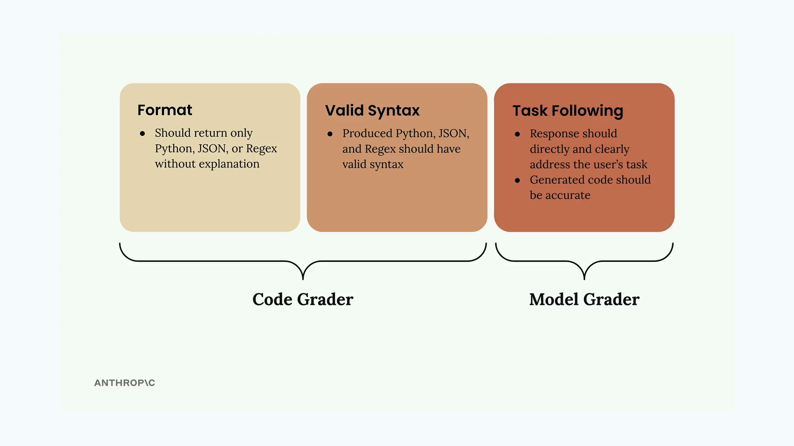
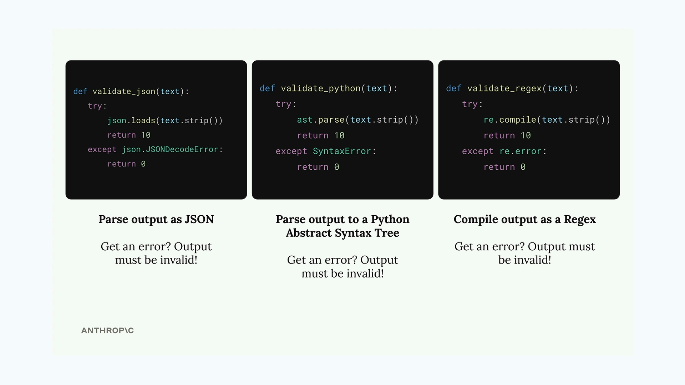

Оценка с помощью кода
Чему научитесь
Видео 7:26 и текст урока
К концу урока вы сможете:
- проверять синтаксис JSON, Python и регулярных выражений кодом;
- добавить в датасет ожидаемый формат ответа;
- объединить баллы грейдера на коде и грейдера на модели.
Видео и текст урока.
Смотреть урок на Skilljar Code based grading · 7:26Когда вы оцениваете ИИ-модели, которые генерируют код, мало проверить, что ответ осмыслен. Нужно ещё убедиться, что сгенерированный код синтаксически корректен и имеет правильный формат. Для этого и нужна оценка с помощью кода.
Как работает оценка кодом
Оценка кодом проверяет две ключевые стороны ответа ИИ:

- Формат — ответ содержит только запрошенный вид кода (Python, JSON или Regex), без пояснений;
- Корректный синтаксис — сгенерированный код действительно разбирается как код нужного языка;
- Следование задаче — ответ прямо решает поставленную задачу и решает её точно.
Первые два критерия проверяет грейдер на коде, а следование задаче оценивает грейдер на модели. Вместе они дают всестороннюю оценку.
Функции проверки синтаксиса
Чтобы проверить синтаксис сгенерированного кода, можно написать три вспомогательные функции, которые пытаются разобрать ответ:

def validate_json(text):
try:
json.loads(text.strip())
return 10
except json.JSONDecodeError:
return 0
def validate_python(text):
try:
ast.parse(text.strip())
return 10
except SyntaxError:
return 0
def validate_regex(text):
try:
re.compile(text.strip())
return 10
except re.error:
return 0
Каждая функция пытается разобрать текст в своём формате. Если разбор удался, она возвращает высший балл 10. Если возникла ошибка — синтаксис неверный, и функция возвращает 0.
Требования к датасету
Чтобы грейдер на коде знал, какой валидатор применить, в тестовых случаях нужно указывать ожидаемый формат ответа:
{
"task": "Create a Python function to validate an AWS IAM username",
"format": "python"
}
Промпт генерации датасета можно обновить, чтобы поле format появлялось автоматически: достаточно добавить его в пример структуры вывода.
Делаем промпт яснее
Чтобы модель отвечала лучше, сделайте указания о формате ответа в промпте конкретнее:
* Respond only with Python, JSON, or a plain Regex * Do not add any comments or commentary or explanation
Можно также предзаполнить сообщение ассистента блоком кода, чтобы модель возвращала только сам код:
add_assistant_message(messages, "```code")
Так Claude начнёт сразу с содержимого кода, и не придётся заранее указывать, будет ли это Python, JSON или Regex.
Объединяем баллы
Последний шаг — объединить балл грейдера на модели с баллом грейдера на коде. Простой способ — взять среднее:
model_grade = grade_by_model(test_case, output) model_score = model_grade["score"] syntax_score = grade_syntax(output, test_case) score = (model_score + syntax_score) / 2
Так качество содержания и техническая корректность получают одинаковый вес. Веса можно менять в зависимости от того, что важнее в вашей задаче.
Проверяем реализацию
Добавив оценку кодом, запустите оценку и получите исходный балл. Сам по себе балл не хорош и не плох — важно, получится ли его улучшить, дорабатывая промпт. Это даёт количественный способ измерять прогресс в prompt engineering вместо субъективных впечатлений.
Дальше
В упражнении грейдеру на модели дают больше контекста — критерии хорошего решения для каждой задачи.
Оригинал урока: Code based grading.